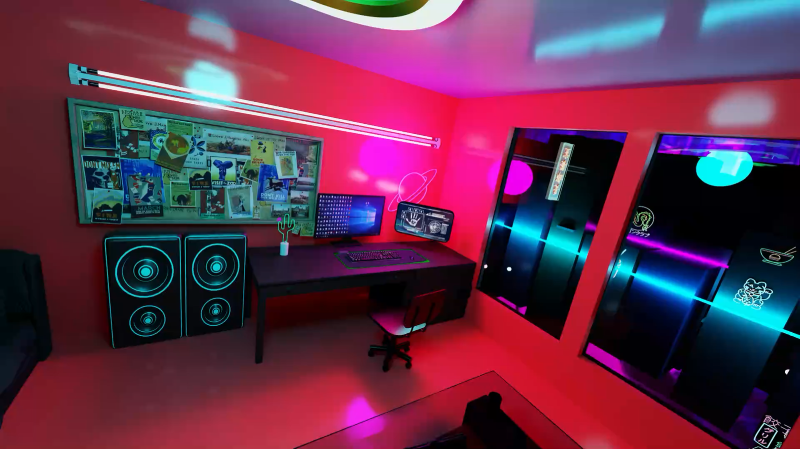
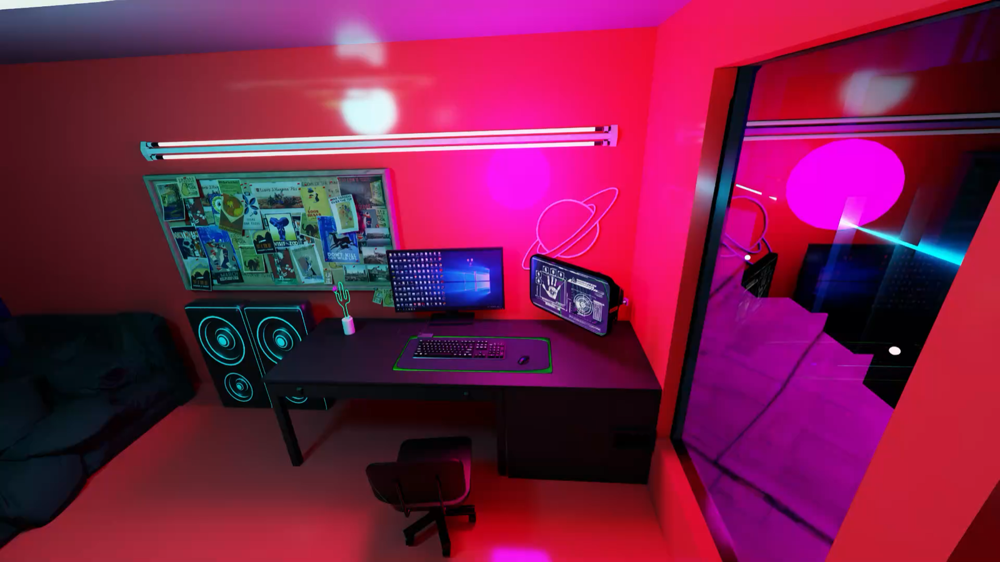

Digital twin · ACAD 288
A real room, rebuilt at game-world fidelity — every prop, every light, every reflection.
Role
Co-lead — modeling, animation, skybox
Status
Completed
Platform
NVIDIA Omniverse
Stack
USD · Blender

The project: take a real-world bedroom staged in the style of Cyberpunk 2077 and reproduce it as a high-definition digital twin in NVIDIA Omniverse, accurate enough for spatial exploration and simulation.
A digital twin has a harsher grading curve than a game level. In a game, a prop just has to look right; in a twin, it has to be right — placement, scale, materials, lighting. As co-lead I owned modeling, animation, and the skybox that sells the world outside the window.
Half the work was craft; the other half was tooling. Moving materials between Blender and Omniverse by hand was eating the team's hours, so I built an extension to do it for us.
High-fidelity modeling
The room's furniture and props modeled to match the source environment piece by piece.
Custom Omniverse extension
A tool that streamlines material transfer into USD, cutting a repetitive manual step out of the team's pipeline.
Animation
Motion layered into the scene — screens, signage, ambient life — so the twin reads as inhabited, not embalmed.
Skybox
The city outside the window, built to hold up from every camera angle inside the room.

What it proved
The twin shipped complete — and the extension work taught me the lesson I keep re-learning: when the pipeline is the bottleneck, build the tool.